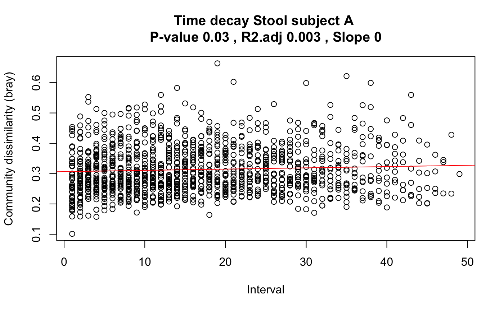

Plot time elapsed against the community dissimilarity for all possible pairs of time points.
timeDecay(x, time = c(1:ncol(x)), dissim = "bray", normtaxa = FALSE, logdissim = FALSE, logtime = FALSE, header = "", units = "", plot = TRUE)
| x | a taxon matrix with rows representing taxa and columns samples |
|---|---|
| time | vector with time steps |
| dissim | sample dissimilarity to use, should be supported by vegdist |
| normtaxa | divide each taxon vector in x by its sum |
| logdissim | take the logarithm of the dissimilarity before fitting a line |
| logtime | take the logarithm of the time interval before fitting a line |
| header | a string to be appended to the plot title (Time decay) |
| units | a string to describe the units of the time points (days, weeks etc) |
| plot | whether to do the plot |
a list with the time intervals, dissimilarity values, intersection, slope, p-value, adjusted R2, dissimilarity measure used and log status of dissimilarity measure
#> [1] "Number of columns 329" #> [1] "Keeping 311 columns with column sums equal or above 10000"out.decay=timeDecay(data[,1:50], header="Stool subject A")